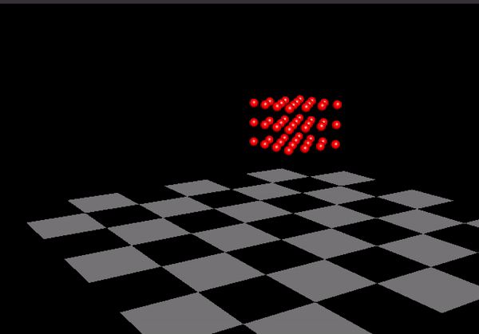

Introduction
KOL_sim is a lightweight physics simulation library for macOS systems providing an environment for physics primitives like springs and masses. Users can create masses, springs, and more complicated objects, apply constraints, actuate springs, modify simulation parameters in real-time, and run headless or not (with or without visualization). KOL_sim can potentially be used for robotics, machine learning, physics and biomedical purposes, topology optimization, etc.
Dependencies
Technologies needed: macOS (any version) and Xcode.
We recommend using -O2 when running KOL_sim (chaning optimization in Xcode can be found in project->build settings).
GLUT is already installed on macOS machines, to link GLUT do the following:
- To check, Open Xcode located in "/Developer/Applications/"
- Choose "New Project" from the file menu
- Choose "Command Line Tool" under the Application template for Mac OS X
- Choose type "C++"
- Enter your desired project name and directory and click create
- In the "Linked Frameworks and Libraries" area click the "+" button, and select "OpenGL.framework"
- Repeat for "GLUT.framework”
-
Source
- Clone
this git repository
- Follow the manual.
“Hello World” Tutorial
To start, include sim.hpp, specify a time step (DT) and a total time frame (T). These variables will determine the length and accuracy for the simulation. The smaller DT is, the longer and slower the simulation will be (usually small DT is used for measuring precise short movements). Then, call Simulation from the KOL_sim namespace and pass the variables to the constructor. Now you have the simulation object.
To create and object, we create a vector of springs and a vector for masses. The function, “createPendulum,” will take these vectors and form the object by filling these vector masses and springs corresponding to the object’s shape. These vectors are the structure itself.
Once calling sim.simulate, The simulation begins. It returns a 3D vector of all masses’ dispositions if the user wants to render it to a file and run a headless (no GUI) simulation. We can sim.start to visualize the disposition of the object.
Here’s an example of creating a pendulum:
#include "sim.hpp"
int main(int argc, char** argv) {
static const double DT = 0.0001;
double T = 14;
KOL_sim::Simulation sim = KOL_sim::Simulation(T, DT);
std::vector masses;
std::vector springs;
KOL_sim::Object_Examples::create_pendulum(masses,springs);
sim.simulate(springs, masses);
sim.start(argc, argv);
return 0;
}
Output:
KOL_sim::ObjectExamples::createPendulum(masses,springs); simply written as such:
void create_pendulum(std::vector& masses, std::vector& springs) {
GLfloat RED[] = {1, 0, 0};
GLfloat GREEN[] = {0, 1, 0};
masses.push_back(KOL_sim::Mass(0.0, 0, 2, 1 , 0.05, GREEN, true));
masses.push_back(KOL_sim::Mass(1.9,0,2,100, 0.12, RED));
for (int i=0; i < masses.size()-1; ++i)
for (int j = i + 1; j < masses.size(); ++j)
springs.push_back(KOL_sim::Spring(&masses[i], &masses[j], 1’000’000));
}
Each mass gets a coordinate in space (first 3 elements) and weight. Color, size and fixed are optional (the rest is elaborated in KOL_sim::mass). The loop at the end attaches each mass to another with a spring. That is usually how we compose a body for the simulation.
Alternatively here’s an example of creating a lattice object dropped from some height:
void create_lattice(std::vector& masses, std::vector& springs) {
GLfloat RED[] = {1, 0, 0};
GLfloat GREEN[] = {0, 1, 0};
for(int i=0; i<4; ++i)
for(int j=0; j<4; ++j)
for(int k=1; k<4; ++k)
masses.push_back(KOL_sim::Mass(j*0.3,i*0.3,k*0.3+2, 3, 0.10, RED));
for (int i=0; i < masses.size()-1; ++i)
for (int j = i + 1; j < masses.size(); ++j)
springs.push_back(KOL_sim::Spring(&masses[i], &masses[j], 2000));
}
Output:

 1.9.3
1.9.3